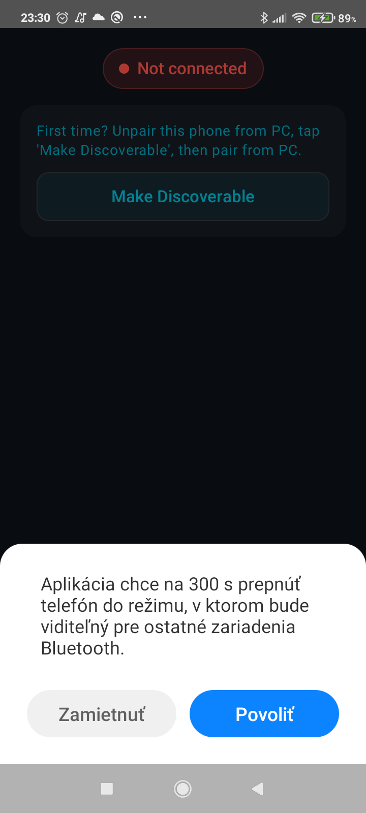
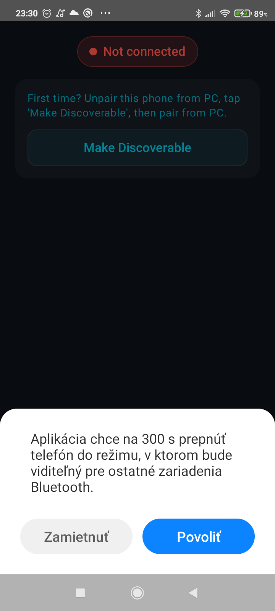

Native Bluetooth HID
Your phone pretends to be a mouse. Your computer believes it. Everyone’s happy. No drivers needed—it just works like magic (or, you know, like a standard protocol).
A couch potato’s best friend
Kurza turns your Android phone into a Bluetooth touchpad because walking three meters to your desk is basically cardio. Works with Windows, macOS, and Linux—no drivers, no desktop software, no excuses.
I wanted to control my PC from the couch. That’s it. That’s the whole product vision.
Did I check if something like this already exists? Absolutely not. I just mass prompted an AI until something worked, fixed a few bugs by hand, and called it a day. Welcome to vibe coding.
If there’s a better app out there, I genuinely don’t want to know.
Your phone pretends to be a mouse. Your computer believes it. Everyone’s happy. No drivers needed—it just works like magic (or, you know, like a standard protocol).
Drag to move the cursor, tap to click, two-finger scroll. It’s not a MacBook trackpad, but it’s good enough for Netflix browsing from the couch.
Wake your phone, Kurza reconnects. Because manually tapping “Connect” every time would require effort, and we’re not about that life.
It’s not rocket science, but Bluetooth pairing can be... temperamental. Here’s the drill:
 

Pro tip: If it doesn’t connect, unpair everything and start over. Bluetooth respects persistence.
Any phone from the last half-decade should work. If yours doesn’t, maybe it’s time to upgrade anyway.
Windows, macOS, Linux—Kurza doesn’t discriminate. If it can pair a mouse, it can pair Kurza.
Technically you can use Kurza standing up, but why would you?
Yep. Bluetooth HID is a standard. Your OS doesn’t care that the “mouse” is actually a phone running code written at 2 AM.
Nope. Zero. Zilch. The whole point is that your computer thinks it’s just a regular Bluetooth mouse.
It works for me. Your mileage may vary. It was vibe-coded by one person who just wanted to pause YouTube from the couch.
Everything was vibe-coded. Even the name.
Download Kurza, pair it once, and never leave your couch again. Your future self (still on the couch) will thank you.